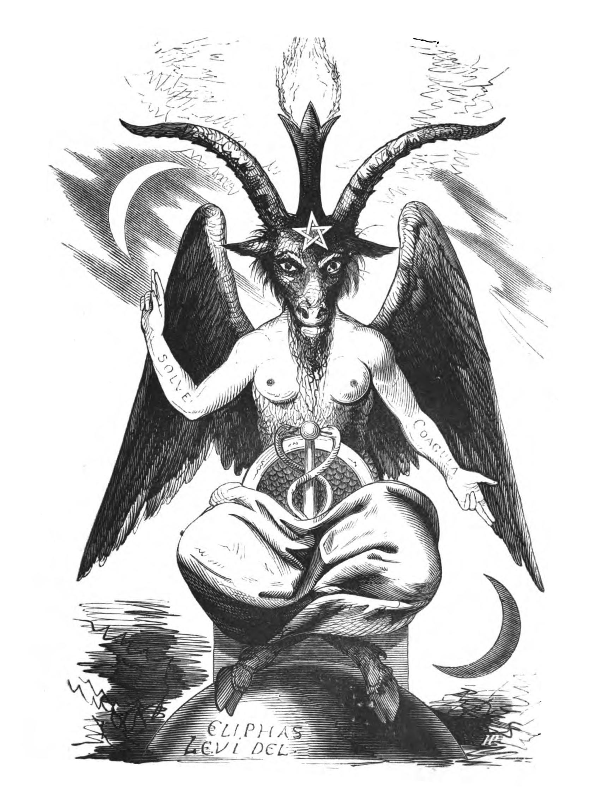

Baphomet
Most people think Baphomet is the true thoughtform of Satan/Devil. No, it is an imaginary deity in paganism and occultism.
The original illustration of Baphomet was created by occultist
Éliphas Lévi for his
Dogme et Rituel de la Haute Magie book in 1856.
The goat on the frontispiece carries the sign of the pentagram on the forehead, with one point at the top, a symbol of light, his two hands forming the sign of occultism, the one pointing up to the white moon of Chesed, the other pointing down to the black one of Geburah. This sign expresses the perfect harmony of mercy with justice. His one arm is female, the other male like the ones of the androgyne of Khunrath, the attributes of which we had to unite with those of our goat because he is one and the same symbol. The flame of intelligence shining between his horns is the magic light of the universal balance, the image of the soul elevated above matter, as the flame, whilst being tied to matter, shines above it. The beast's head expresses the horror of the sinner, whose materially acting, solely responsible part has to bear the punishment exclusively; because the soul is insensitive according to its nature and can only suffer when it materializes. The rod standing instead of genitals symbolizes eternal life, the body covered with scales the water, the semi-circle above it the atmosphere, the feathers following above the volatile. Humanity is represented by the two breasts and the androgyne arms of this sphinx of the occult sciences
Wikipedia
Worth reading